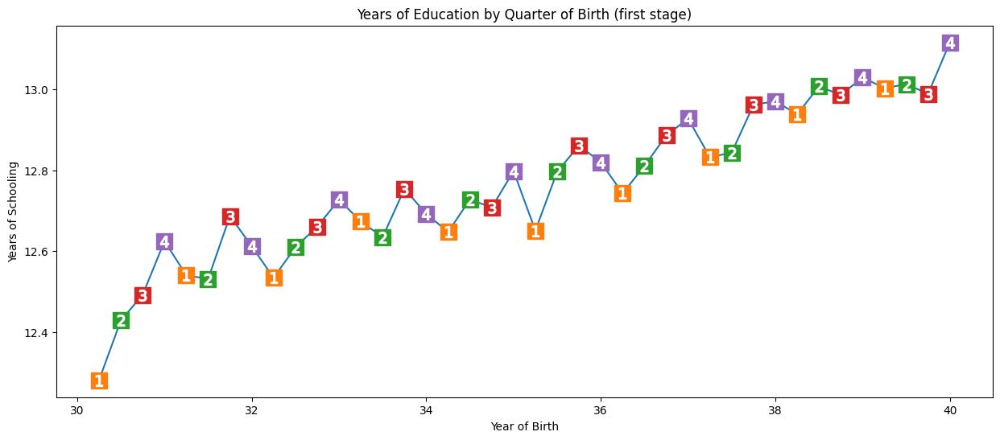
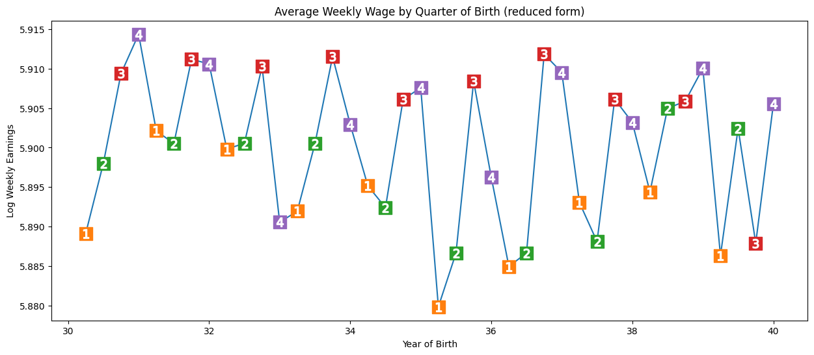

flowchart LR;
iv("Instrumental variable"):::white;
e("Exposure/treatment"):::white;
o("Outcome"):::white;
u("Unmeasured confounders"):::white;
iv --> e;
e --> o;
u -.-> e;
u -.-> o;
classDef white fill:#FFFFFF, stroke:#FFFFFF;
classDef black fill:#FFFFFF, stroke:#000000;
classDef empty width:0px,height:0px;
classDef green fill:#DDF2D1, stroke: #FFFFFF;
39 Instrumental variables
39.1 What is an instrumental variable?
An instrumental variable (IV) is a variable that satisfies the following assumptions: 1. It causes variation in the exposure/treatment (i.e. relevance assumption - it is correlated with X, an endogenous explanatory variable) - also known as the strong first stage assumption 2. It is unrelated to the outcome (and so any affect on outcome is exclusively via the instruments effect on the exposure) - also known as the exclusion restriction 3. As it is unrelated to the outcome, is is therefore unrelated to unmeasured confounders (unmeasured differences in characteristics that affect outcomes) (i.e. exogeneity assumption - it is an exogneous variable) [McClellan et al. 1994][Igelström et al. 2022] [source] [source]
This is illustrated below:
Due to these characteristics, instrumental variables enable us to mimic randomisation to treatment. [McClellan et al. 1994] In fact, randomisation to treatment in an RCT is an example instrumental variable (it meets the above assumptions).
flowchart LR;
iv("RCT randomisation to treatment"):::white;
e("Exposure/treatment"):::white;
o("Outcome"):::white;
u("Unmeasured confounders"):::white;
iv --> e;
e --> o;
u -.-> e;
u -.-> o;
classDef white fill:#FFFFFF, stroke:#FFFFFF;
classDef black fill:#FFFFFF, stroke:#000000;
classDef empty width:0px,height:0px;
classDef green fill:#DDF2D1, stroke: #FFFFFF;
You have likely identified an instrumental variable ‘if people are confused when you tell them about the instrument’s relationship to the outcome’. * No-one is confused if you say family size will reduce labour supply of women * They will be confused if you use gender composition of first two children as instrumental variable, and find ‘that mothers whose first two children were the same gender were employed outside the home less than those whose two children had a balanced sex ratio’, as they don’t expect gender composition to incentive work outside home - but it is related as if both the same gender, they’re more likely to try again for child of another gender [Causal Inference: The Mixtape - Scott Cunningham]
39.2 Two-stage least squares (2SLS)
You can use the two-stage least squares (2SLS) method to estimate the causal effect, using instrumental variables for individual-level data.
- Regress exposure (\({x}\)) on instrumental variable (G) to produce \(\hat{x}\) (estimate of exposure independent of confounders)
- Regress outcome (Y) on \(\hat{x}\). Here, \(\hat{x}\) is replacing the actual value of the problematic predictor, \({x}\). [BSc Medical Sciences]
We include the measured confounders in both stages. * Included in first stage to reflect exogenous movement in treatment * Included in second stage to avoid omitted variable bias
The ‘groups being compared differ only in likelihoods of treatment, as opposed to a division into pure treatment and control groups’. Hence, this ‘method estimates an incremental or “marginal” effect of treatment only over the range of variation in treatment across the IV groups’. [McClellan et al. 1994]
‘IV analysis estimates a local average treatment effect (LATE) among ’compliers’ - individudals whose exposure status is affected by the instrument. This group cannot be precisely identified, and the LATE may therefore sometimes be of limited practical or policy relevance’. [Igelström et al. 2022]
There is a variant called ‘Three-Stage Least Squares (3SLS). This method is an extension of the 2SLS method and is used when there are more than two endogenous variables in the model. The 3SLS method is based on the idea that the endogenous variables are correlated with each other, and therefore, the coefficients of these variables need to be estimated simultaneously.’ [source]
39.3 Assumptions of instrumental variable analysis
Instrumental variable assumptions(as above)
Homogeneity assumption - the association between the instrumental variable and the exposure is homogenous (same for everyone in the population), or the effect of the exposure on the outcome is homogenous [BSc Medical Sciences]
39.4 Limitations
‘A concern with any IV strategy is that the instrumental variable is correlated with unobserved determinants of the outcome of interest.’ Can address by estimating models for held-back risk factors pre-determined at delivery date, looking for correlation with the IV. [Card et al. 2018]
A weak instrument will produce an estimate that is biased and imprecise (and we may then have false confidence in it being unbiased). To help address this… * Check strong first stage assumption - i.e. want statistically significant relationship when regress X on Z - suggests F-statistic of at least 11 in first stage. * Can’t test exclusion restriction assumption - just have to think through any possible ways that the IV could affect the outcome that aren’t via the treatment. [source]
39.5 Non-parametric instrumental variable methods
‘Most IV applications make use of a two-stage least squares procedure [2SLS; e.g., Angrist et al., 1996] that requires assumptions of linearity and homogeneity (e.g., all airline customers must have the same price sensitivity). Nonparametric IV methods from the econometrics literature relax these assumptions [e.g., Newey and Powell, 2003]. However, these methods work by modeling the outcome as an unknown linear combination of a pre-specified set of basis functions of the treatment and other covariates (e.g. Hermite polynomials, wavelets or splines) and then modeling the conditional expectation of each of these basis functions in terms of the instruments (i.e. the number of equations is quadratic in the number of basis functions). This requires a strong prior understanding of the data generating process by the researcher, and the complexity of both specification and estimation explodes when there are more than a handful of inputs.’ [Hartford et al. 2017]
Hartford et al. 2017 propose the Deep IV framework, which uses ML to perform IV analysis… * First stage: fit conditional distribution for treatment given instruments and covariates with a deep neural net (stochastic gradient descent (SGD)) [Hartford et al. 2017] * Second stage: ‘target a loss function involving integration over the conditional treatment distribution from the first stage’ [Hartford et al. 2017]… ‘incorporate the fitted conditional distribution to minimize a loss function using a second deep neural net, and use an out-of-sample causal validation procedure to tune the deep network hyper-parameters’ [source]
They provide the package on GitHub for this analysis using Python (broken - only supports Keras 2.0.6) (although there has been non-integrated pull request to make it work with Keras 2.3.1).
Xu et al. 2021 provide another example of IV with deep learning, again sharing code on GitHub. This has open peer review, and so helpfully has some insightful comments around assumptions and theoretical justifications.
39.6 Examples
39.6.1 Example 1: Mendelian randomisation
Disease association with non-genetic risk factors are often confounded - for example:
flowchart LR;
e("Drinking alcohol"):::green;
o("Lung cancer"):::green;
c("Smoking"):::white;
e --> o;
c --> e; c --> o;
classDef white fill:#FFFFFF, stroke:#FFFFFF;
classDef black fill:#FFFFFF, stroke:#000000;
classDef empty width:0px,height:0px;
classDef green fill:#DDF2D1, stroke: #FFFFFF;
Genotype-phenotype associations are much less likely to be confounded. They are aetiological associations (causing or contributing to disease/condition development).
If we know of a gene closely linked to the phenotype without direct effect on the disease, it can often be reasonably assumed that the gene is not itself associated with any confounding factors - a phenomenon called Mendelian randomization. Genetic variants (G) should influence the exposure (X) but should not be directly associated with confounders (U) or the outcome (Y).
We can then identify the causal relationship between X and Y - if it doesn’t cause Y, then G should be independent of Y. This is the same logic as we use for an RCT (where G would be randomisation to treatment).
flowchart TD;
con:::outline;
subgraph con["If X doesn't cause Y..."]
G:::white;
X:::white;
Y:::white;
U:::white;
end
G --> X;
U --> X;
U --> Y;
uncon:::outline;
subgraph uncon["If X causes Y..."]
G2("G"):::white;
X2("X"):::white;
Y2("Y"):::white;
U2("U"):::white;
end
G2 --> X2;
U2 --> X2;
U2 --> Y2;
X2 --> Y2;
classDef white fill:#FFFFFF, stroke:#FFFFFF;
classDef black fill:#FFFFFF, stroke:#000000;
classDef outline fill:#FFFFFF;
[BSc Medical Sciences]
39.6.2 Example 2: Effect of intensive treatment on mortality in patients with acute myocardial infarction
Example from McClellan et al. 1994: Want to determine the effect of more intensive treatments (e.g. catheterisation and revascualisation) on mortality in elderly patients with acute myocardial infarction. They use distance from hospital as an ‘instrumental variable to account for unobserved case-mix variation (selection bias) in observational Medicare claims data’ [McClellan et al. 1994]
Why is distance an instrumental variable? * Intensive treatment only performed at certain hospitals * Comparing treatments and outcomes between patients treated at different hospitals risks selection bias, ‘because physician and patient decisions that influence treatment choice may ALSO influence choice of hospital to go to - e.g. AMI patients who appear to be better candidates for catheterisation may be disproportionately admitted to catheterisation hospitals’ [McClellan et al. 1994] * Distance from hospital (specifically, differential distance to hospital providing intensive treatment): * Affects probability of receiving intensive treatment * Does not affect patient characteristics * Hence, distance from hospital can be used as an instrumental variable [Igelström et al. 2022] - it meets the IV assumptions: 1. Causes variation in whether receive intensive treatment 2. Unrelated to mortality 3. Unrelated to unmeasured confounders (like the physician and patient decisions)
flowchart LR;
treat("<b>Intensive treatment</b><br>(e.g. catheterisation)"):::green;
mortality("<b>Mortality</b>"):::green;
hosp("<b>Hospital</b> attended<br>(i.e. whether it<br>offers the treatment)"):::white;
dist("<b>Differential distance</b> to<br> hospital providing<br>intenstive treatment"):::white;
decisions("Physician and patient<br><b>decisions</b>"):::white;
dist --> hosp;
decisions --> hosp;
hosp --> treat;
treat --> mortality;
classDef white fill:#FFFFFF, stroke:#FFFFFF;
classDef black fill:#FFFFFF, stroke:#000000;
classDef empty width:0px,height:0px;
classDef green fill:#DDF2D1, stroke: #FFFFFF;
First, checked for presence of selection bias (i.e. whether hospital type affects treatment intensity - and therefore whether simple comparisons of treatments and outcomes across hospital types are valid). Then, as was present, used IV methods to estimate effect of intensive treatment on mortality. Differential distance approximately randomises patients to different likelihoods of receiving intensive treatments, uncorrelated with health status. * First, compared two groups of apx. equal size - patients near to catheterisation hospital (differential distance <= 2.5 miles) and patients far from them (> 2.5 miles). This evidenced assumption that distribution of health status in AMI patients is independent of differential distance, and illustrates IV method, estimating the ‘average effect of invasive treatment for all patients who are marginal from the standpoint of the near-far IVs - those who undergo catheterisation in the relatively near group and not in the relatively far group - if the two groups are balanced and if catheterisation is the only treatment that differs between the groups’ * Then used more general IV estimation netchniques with wide range of differential distance groups, and account for small remaining observable differences between differential-distance groups [McClellan et al. 1994]
39.6.3 Example 3: caesarean section
This example is taken from It’s about time: Cesarean sections and neonatal health [Costa-Ramón et al. 2018].
The study aimed to estimate the causal relationship between caesarean section and newborn health: Apgar-1 and Apgar-5; Reanimation (assisted ventilation); ICU admission; Neonatal death; Umbilical cord pH.
Several known measured confounders (e.g. age, gestational length, obstetric risk), but also omitted variable bias due to other unmeausred confounders.
flowchart LR;
e("Caesarean section"):::green;
o("Neonatal health<br>(e.g. Apgar)"):::green;
c("Measured and<br>unmeasured confounders"):::white;
e --> o;
c --> e; c --> o;
classDef white fill:#FFFFFF, stroke:#FFFFFF;
classDef black fill:#FFFFFF, stroke:#000000;
classDef empty width:0px,height:0px;
classDef green fill:#DDF2D1, stroke: #FFFFFF;
Time of birth can be used as an instrumental variable as: * It is associated with treatment (unplanned C-sections more likely in early hours of night) * It is unrelated to outcome and confounders (mothers giving birth at different times of day are observationally similar - suggesting excess number of C-sections observed are due to non-medical reasons)
flowchart LR;
e("Caesarean section"):::green;
o("Neonatal health<br>(e.g. Apgar)"):::green;
c("Measured and<br>unmeasured confounders"):::white;
i("Time of day"):::white;
i --> e;
e --> o;
c --> e; c --> o;
classDef white fill:#FFFFFF, stroke:#FFFFFF;
classDef black fill:#FFFFFF, stroke:#000000;
classDef empty width:0px,height:0px;
classDef green fill:#DDF2D1, stroke: #FFFFFF;
Showing example of results for Apgar-5 scores.
From standard OLS estimation, unplanned CS coefficient for predicting Apgar-5 (with standard error in parentheses, clustered at hospital-shift level): * -0.219 (0.038) (regression controlling only for weekday and hospital fixed effects) * -0.219 (0.037) (maternal controls added) * -0.142 (0.043) (pregnancy controls added)
Interpretation: Delivering C-section associated with decline in Apgar-5. However, likely biased as C-section v.s. vaginal birth cohorts not comparable.
Hence, performed 2SLS. In first stage, early night coefficients for predicting unplanned C-section were: * 0.073 (0.011) * 0.073 (0.011) * 0.063 (0.011)
Intepretation: Births in early night are 6% more likely to be by caesarean.
In second stage, unplanned CS coefficients for predicting Apgar-5: * -0.965 (0.404) * -0.987 (0.408) * -0.936 (0.464)
Interpretation: Increased probability of Apgar-5, significant at 5% significance level.
39.7 Python example
This example is taken from Causal Inference for the Brave and True (MIT license).
Interested in causal effect of education on wage. Confounders like ability (which affect education and wage).
flowchart LR;
e("Education<br>(years of schooling)"):::green;
o("Wage"):::green;
c("Year of birth<br>State of birth<br>Ability"):::white;
e --> o;
c --> e; c --> o;
classDef white fill:#FFFFFF, stroke:#FFFFFF;
classDef black fill:#FFFFFF, stroke:#000000;
classDef empty width:0px,height:0px;
classDef green fill:#DDF2D1, stroke: #FFFFFF;
Quarter of birth (i.e. dividing year into Q1, Q2, Q3, Q4) impacts education (kids born earlier in school year start education at older age than kids born later in school year), and does not impact wage (other than through its impact on education).
flowchart LR;
e("Education<br>(years of schooling)"):::green;
o("Wage"):::green;
c("Year of birth<br>State of birth<br>Ability"):::white;
i("Quarter of birth"):::white;
i --> e;
e --> o;
c --> e; c --> o;
classDef white fill:#FFFFFF, stroke:#FFFFFF;
classDef black fill:#FFFFFF, stroke:#000000;
classDef empty width:0px,height:0px;
classDef green fill:#DDF2D1, stroke: #FFFFFF;
39.7.1 Set-up (import packages and data)
# Import packages
from dataclasses import dataclass
from linearmodels.iv import IV2SLS
import matplotlib.pyplot as plt
import os
import pandas as pd
import statsmodels.formula.api as smf
# Define file paths
@dataclass(frozen=True)
class Paths:
'''Singleton object for storing paths to data and database.'''
data = '../data'
ak91 = 'ak91.csv'
paths = Paths()data = pd.read_csv(os.path.join(paths.data, paths.ak91))
data.head()| log_wage | years_of_schooling | year_of_birth | quarter_of_birth | state_of_birth | |
|---|---|---|---|---|---|
| 0 | 5.790019 | 12.0 | 30.0 | 1.0 | 45.0 |
| 1 | 5.952494 | 11.0 | 30.0 | 1.0 | 45.0 |
| 2 | 5.315949 | 12.0 | 30.0 | 1.0 | 45.0 |
| 3 | 5.595926 | 12.0 | 30.0 | 1.0 | 45.0 |
| 4 | 6.068915 | 12.0 | 30.0 | 1.0 | 37.0 |
# Convert quarter of birth from categorcal to dummy variable
factor_data = data.assign(
**{f'q{int(q)}': (data['quarter_of_birth'] == q).astype(int)
for q in data['quarter_of_birth'].unique()})
factor_data.head()| log_wage | years_of_schooling | year_of_birth | quarter_of_birth | state_of_birth | q1 | q2 | q3 | q4 | |
|---|---|---|---|---|---|---|---|---|---|
| 0 | 5.790019 | 12.0 | 30.0 | 1.0 | 45.0 | 1 | 0 | 0 | 0 |
| 1 | 5.952494 | 11.0 | 30.0 | 1.0 | 45.0 | 1 | 0 | 0 | 0 |
| 2 | 5.315949 | 12.0 | 30.0 | 1.0 | 45.0 | 1 | 0 | 0 | 0 |
| 3 | 5.595926 | 12.0 | 30.0 | 1.0 | 45.0 | 1 | 0 | 0 | 0 |
| 4 | 6.068915 | 12.0 | 30.0 | 1.0 | 37.0 | 1 | 0 | 0 | 0 |
39.7.2 Traditional OLS estimate
def parse(model, exog="years_of_schooling"):
param = model.params[exog]
se = model.std_errors[exog]
p_val = model.pvalues[exog]
print(f"Parameter: {param}")
print(f"SE: {se}")
print(f"95 CI: {(-1.96*se,1.96*se) + param}")
print(f"P-value: {p_val}")formula = "log_wage ~ years_of_schooling + C(state_of_birth) + C(year_of_birth) + C(quarter_of_birth)"
ols = IV2SLS.from_formula(formula, data=data).fit()
parse(ols)Parameter: 0.06732572817658422
SE: 0.00038839984390486796
95 CI: [0.06656446 0.06808699]
P-value: 0.039.7.3 Quarter of birth
Show that quarter of birth is an instrumental variable, which requires it to:
- Cause variation in exposure - individuals born in the last quarter of the year have slightly more time in education than those born in the beginning of the year
We check this using a graph and regression. For simplicity, we’re just using Q4 (yes/no) as our instrument.
In the regression, we regress the instrumental variable (q4) and confounders (year + state of birth) on the exposure (years of schooling). This will statistically demonstrate that Q4 is an instrumental variable - will show us that quarter of birth affects years of schooling, whilst also control for year and state of birth. Here, on average, Q4 have 0.1 more years of education than those born in other quarters of year.
group_data = (data
.groupby(["year_of_birth", "quarter_of_birth"])
[["log_wage", "years_of_schooling"]]
.mean()
.reset_index()
.assign(time_of_birth = lambda d: d["year_of_birth"] + (d["quarter_of_birth"])/4))
plt.figure(figsize=(15,6))
plt.plot(group_data["time_of_birth"], group_data["years_of_schooling"], zorder=-1)
for q in range(1, 5):
x = group_data.query(f"quarter_of_birth=={q}")["time_of_birth"]
y = group_data.query(f"quarter_of_birth=={q}")["years_of_schooling"]
plt.scatter(x, y, marker="s", s=200, c=f"C{q}")
plt.scatter(x, y, marker=f"${q}$", s=100, c=f"white")
plt.title("Years of Education by Quarter of Birth (first stage)")
plt.xlabel("Year of Birth")
plt.ylabel("Years of Schooling");
# Run regression
first_stage = smf.ols(
'years_of_schooling ~ C(year_of_birth) + C(state_of_birth) + q4',
data=factor_data).fit()
# Display results
print("q4 parameter estimate:, ", first_stage.params["q4"])
print("q4 p-value:, ", first_stage.pvalues["q4"])q4 parameter estimate:, 0.10085809272786678
q4 p-value:, 5.464829416613623e-15- Be unrelated to the outcome (and therefore to unmeasured confounders) - influence should all be due to effect on treatment. Here, we see seasonal pattern in outcome (earnings). We run a regression of the instrumental variable (Q4) and confounders (year + state of bith) on the outcome (wages). We see a significant result. Those born in Q4 have, on average 0.8% higher wages. P-value not as close to 0 as before, but pretty significant.
Note: It’s not possible to verify this condition - we can only argue in favour of it - i.e. no reason for pattern to affect income beyond through education.
plt.figure(figsize=(15,6))
plt.plot(group_data["time_of_birth"], group_data["log_wage"], zorder=-1)
for q in range(1, 5):
x = group_data.query(f"quarter_of_birth=={q}")["time_of_birth"]
y = group_data.query(f"quarter_of_birth=={q}")["log_wage"]
plt.scatter(x, y, marker="s", s=200, c=f"C{q}")
plt.scatter(x, y, marker=f"${q}$", s=100, c=f"white")
plt.title("Average Weekly Wage by Quarter of Birth (reduced form)")
plt.xlabel("Year of Birth")
plt.ylabel("Log Weekly Earnings");
reduced_form = smf.ols(
"log_wage ~ C(year_of_birth) + C(state_of_birth) + q4",
data=factor_data).fit()
print("q4 parameter estimate:, ", reduced_form.params["q4"])
print("q4 p-value:, ", reduced_form.pvalues["q4"])q4 parameter estimate:, 0.008603484260139599
q4 p-value:, 0.00149491271836674539.7.4 Estimating the average causal effect
39.7.4.1 Option 1. Dividing reduced form by 1st stage.
We can use the two regressions above - namely, the first stage:
first_stage = smf.ols(
'years_of_schooling ~ C(year_of_birth) + C(state_of_birth) + q4',
data=factor_data).fit()And the reduced form:
reduced_form = smf.ols(
"log_wage ~ C(year_of_birth) + C(state_of_birth) + q4",
data=factor_data).fit()To get an unbiased IV estimate of the average causal effect, we can scale the effect of the reduced form coefficient by the first stage coefficient:
$ _{IV} = $
Below, we see 0.08… which means we expect each additional year in school to increase wages by 8%.
reduced_form.params["q4"] / first_stage.params["q4"]0.0853028649208481739.7.4.2 Option 2. 2 stages least squares (2SLS)
In 2SLS, we do the first stage as before -
first_stage = smf.ols(
'years_of_schooling ~ C(year_of_birth) + C(state_of_birth) + q4',
data=factor_data).fit()But then, run second stage where replace treatment variable with fitted values of the first stage. These are essentially “the treatment purged from omitted variable bias”. Fitted values are the predicted values of the outcome variable from the model, when you input the values of the predictors into the model.
We see the same results as with option 1.
sls_data = factor_data.assign(
years_of_schooling_fitted=first_stage.fittedvalues)
iv_by_hand = smf.ols(
"log_wage ~ C(year_of_birth) + C(state_of_birth) + years_of_schooling_fitted",
data=sls_data).fit()
iv_by_hand.params["years_of_schooling_fitted"]0.0853028649208909439.7.4.3 Option 3. Automated 2SLS
This is recommended, as else standard errors from second stage are a bit off.
formula = 'log_wage ~ 1 + C(year_of_birth) + C(state_of_birth) + [years_of_schooling ~ q4]'
iv2sls = IV2SLS.from_formula(formula, factor_data).fit()
parse(iv2sls)Parameter: 0.08530286494062492
SE: 0.025540812815019267
95 CI: [0.03524287 0.13536286]
P-value: 0.0008381914642161536You can also run with multiple instruments - here, all the quarters of birth…
formula = 'log_wage ~ 1 + C(year_of_birth) + C(state_of_birth) + [years_of_schooling ~ q1+q2+q3]'
iv_many_zs = IV2SLS.from_formula(formula, factor_data).fit()
parse(iv_many_zs)Parameter: 0.1076937048813452
SE: 0.01955714901081754
95 CI: [0.06936169 0.14602572]
P-value: 3.657974700921329e-0839.7.4.4 Summary
Comparing traditional OLS with 2SLS: * Education estimate lower with OLS than 2SLS, suggesting omitted variable bias may be less strong than thought * 2SLS has much wider confidence intervals than OLS
Some things to consider: * If an instrumental variable has a small correlation with the treatment, then it is a weak instrument, and we won’t be able to learn much from the instrument. * 2SLS is biased towards OLS (i.e. if OLS has positive/negative bias, then so will 2SLS) * Bias will increase with the number of instruments added
Common mistakes: * Doing IV by hand * Using alternatives to OLS for the first stage. ‘The consistency of IV relies on a property that only OLS can give, which is the orthogonality of the residuals, so anything different than OLS on the 1st stage will yield something biased.’